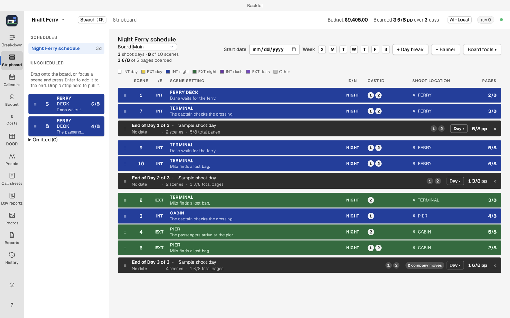

Stripboard

The stripboard is the shooting order: scenes as strips, arranged into days. (⌘2)
Reading the board
Strips show their scene number, heading, page eighths and elements. Backlot colors strips by interior or exterior and day or night, using standard paper stripboard colors: INT day, EXT day, INT night, EXT night.
Page lengths are in eighths. A day break ends the day above it and shows that day's totals in pages and cast. Unscheduled scenes wait in the left column until you drag them onto the board.
Arrange the board
- Drag strips into shooting order, or select several and move them together.
- Insert day breaks between scenes to close a day. Use End day on a strip or insert a day break where the shooting day ends.
⌥↑and⌥↓move the focused strip (or banner or day break).- Enter opens the strip inspector; Esc closes it.
- Enter on an unscheduled scene boards it.
Backlot flags days that exceed your page target, and warns when a cast member is double-booked across units.
Sort board
Sort board groups scenes by location, set and time of day against the page target. Review the result before accepting: location availability, company moves and night shoots matter, so treat the sort as a starting draft, not a schedule. Backlot asks you to confirm the sort before applying it.
Boards and units
The Board menu at the top of the view shows the active board. Sheets, schedule, DOOD and call sheets all read it.
Video walkthrough
Build a shooting schedule · Captions. See video notes and draft narration.